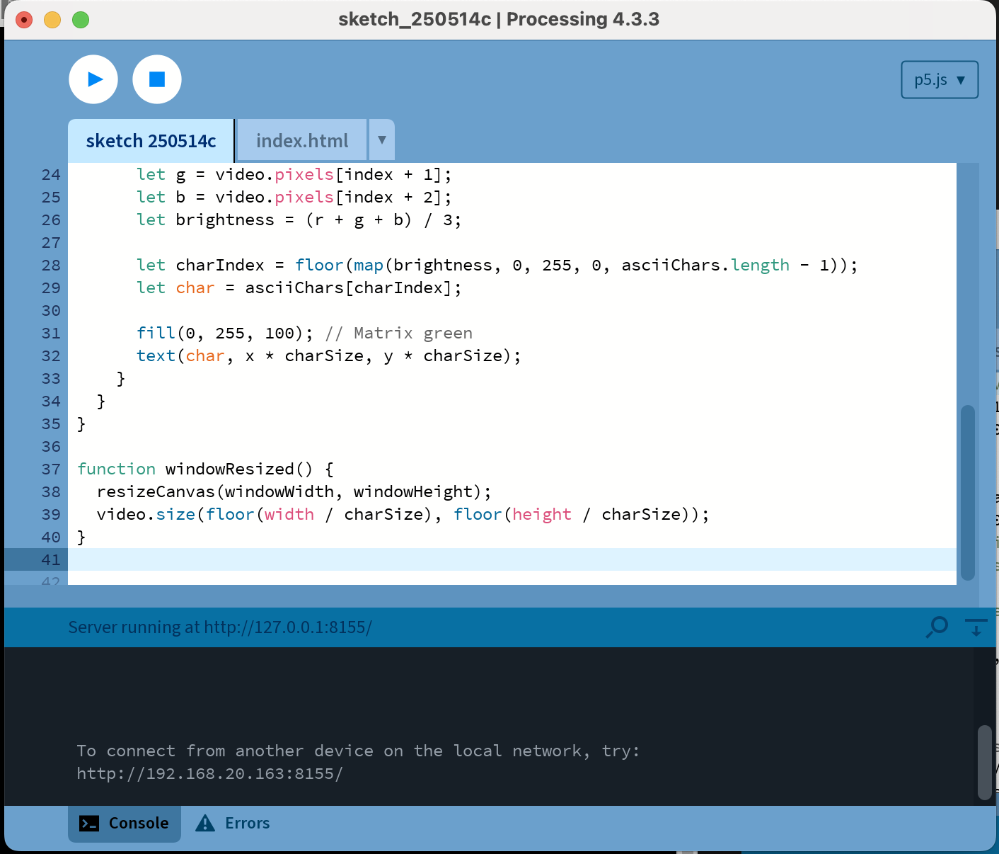
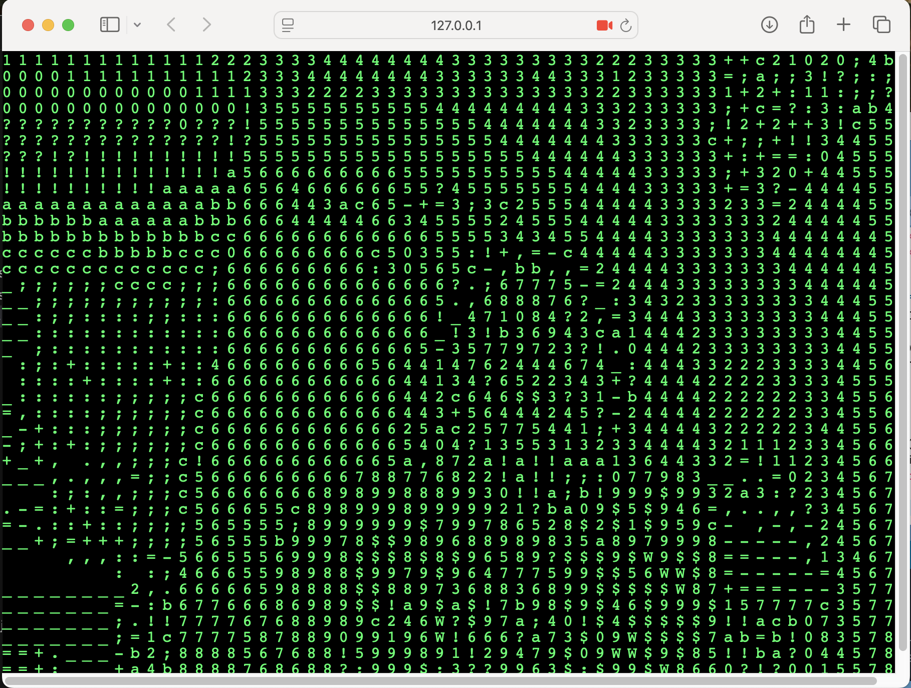

In Week 7, I started building the home/landing page for my Workbook 2C.
I decided to stick with the cyberpunk-tech aesthetic I used in my previous workbook, but this time I
wanted to push it further and make it feel more refined—less chaotic, more intentional.
I edited a PNG of a computer and wrapped text around it, just to give it that layered, glitchy feel. Then
I had the idea to actually place my links inside the screen of the computer, which felt like a nice little
interactive touch that fit the theme. It sounded simple enough in my head, but getting the placement right
took a fair bit of fiddling—things kept shifting or looking slightly off.
After some trial and error (and a bit of squinting at the screen wondering why everything was one pixel
to the left), I finally got everything lined up.


p5 experiment for week 7
I wanted to make my weekly pages more interactive by integrating
p5 sketches in my html webpages. So I tried a glitching number webcam effect for my week 7 background.
I got a lot of inspiration from pinterest and browsing through many tech websites.